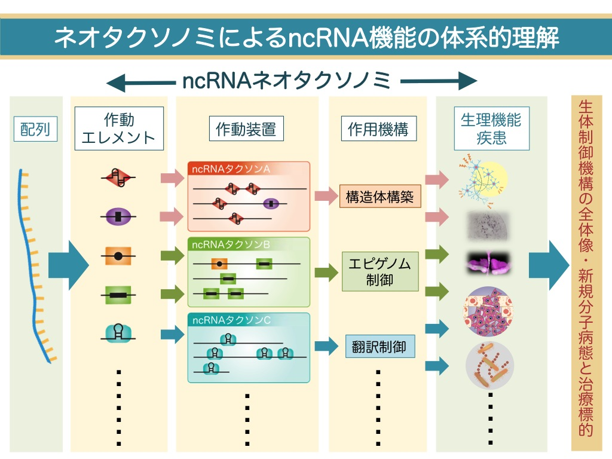
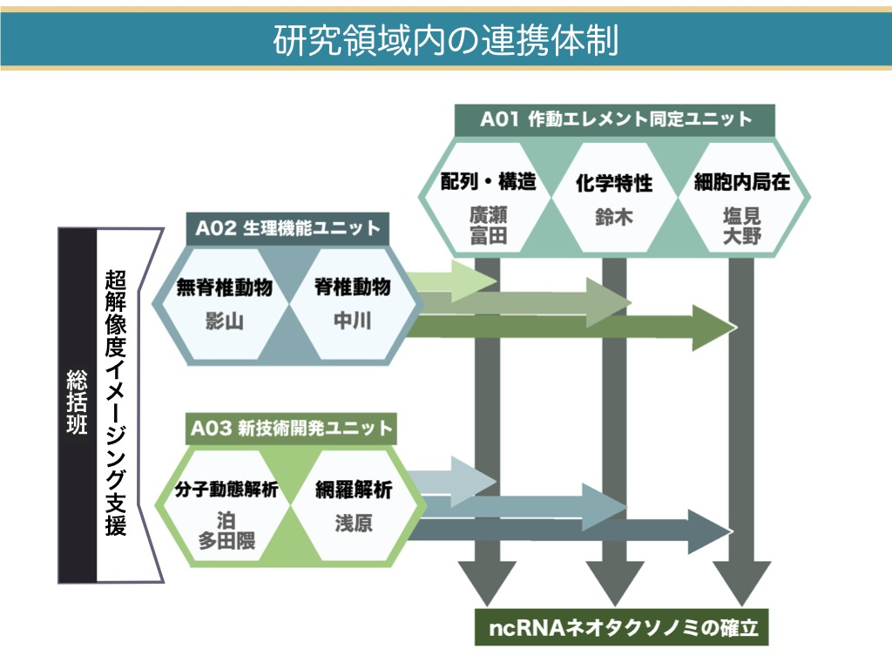

かつて「ジャンク」と考えられていたゲノムの広大なノンコーディング領域から、膨大な数のノンコーディングRNA (ncRNA)が転写され、様々な生命現象において重要な役割を果たしていることが近年明らかになっています。これらのncRNA群は、タンパク質が多彩な機能を持つのと同様に、それぞれ多様な特性を持っていると考えられます。一方ncRNAとは、「タンパク質をコードしないRNA」という除外的分類によって一括りにされた雑多な分子群であるため、このような分子群を対象とした研究には、個々の分子の特性を整理し、体系的な研究を推進することが必要不可欠です。本領域では、ncRNAの配列中に潜む多様な機能単位を抽出して整理し、それに基づいた新しい分類体系「ノンコーディングRNAネオタクソノミ」を確立します。これによって、各ncRNAの特性に応じた機能解析を体系的に進め、ncRNAによる生体制御機能の全容を解明することを目的とします。

本領域では、「ノンコーディングRNAネオタクソノミ」の分類指標として、ncRNAの機能単位となる配列要素を「作動エレメント」と呼びます。また作動エレメント上に形成されるRNA-タンパク質複合体を「作動装置」と呼び、その詳細な機能解析を実施します。
そのために、
- 作動エレメントの抽出と探索を行う「作動エレメント同定ユニット(A01)」
- 作動装置が関わる生理現象を解明する「生理機能ユニット(A02)」
- 作動装置の分子動態解析およびゲノムワイドな探索を行うための「新技術開発ユニット(A03)」
を設置します。さらに細胞内RNAの微細局在解析を強力に推進するために、超解像度顕微鏡を共通機器として設置し、ncRNA作動装置の詳細な細胞内挙動解析を支援します。上記3ユニットがお互いの研究成果を生かし、各種の作動エレメントと作動装置の分子動態、細胞内挙動、さらに生理機能との対応付けがなされた「ノンコーディングRNAネオタクソノミ」を確立し、ncRNAの機能を体系的に理解することを目指します。

「ノンコーディングRNAネオタクソノミ」の確立によって、ncRNAの機能を作動エレメントの組み合わせから推測し、それを検証すること（タンパク質のドメイン構造にもとづいた機能予測に相当）が各種ncRNAにおいて可能となり、ncRNAの研究全体が飛躍的に促進されます。また、作動エレメントに基づいて機能的なncRNAを人為的にデザインしたり、ncRNA作動装置を標的とした化合物スクリーニングを実施することによって、生体機能をコントロールするための新規ツールの開発が可能になります。また、これらの研究成果は、数多あるncRNA毒性に起因する神経疾患などの疾患に対する分子病態の解明や、新規治療ターゲットの開発につながることが期待されます。